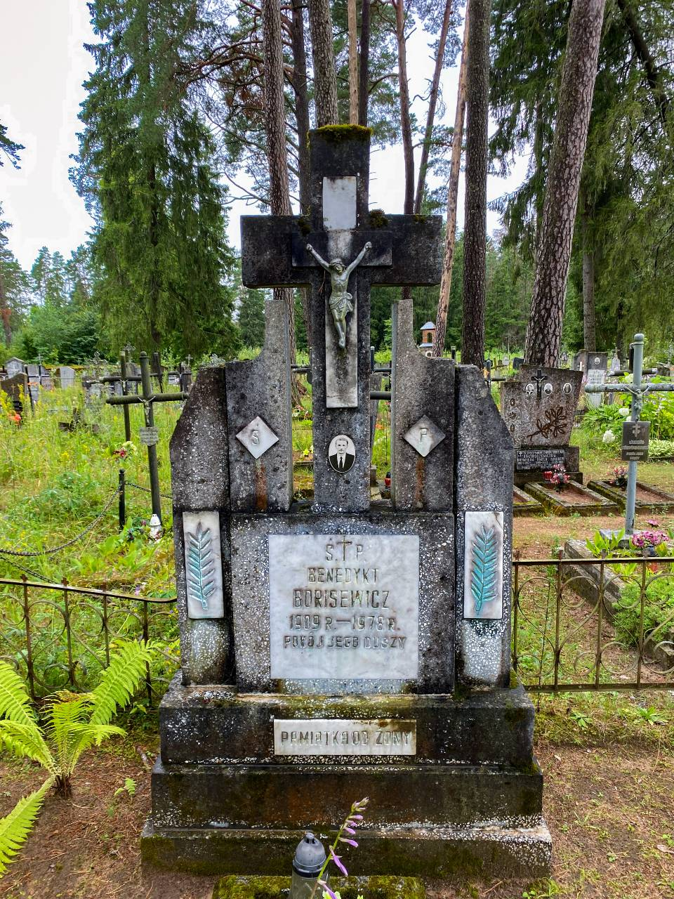
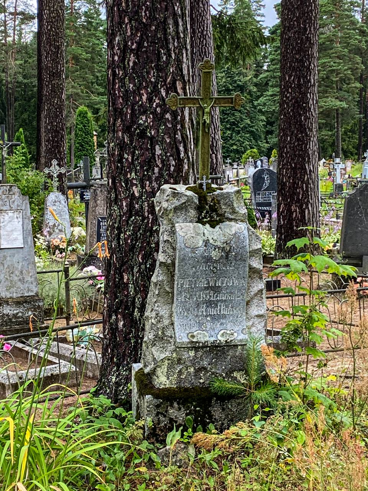
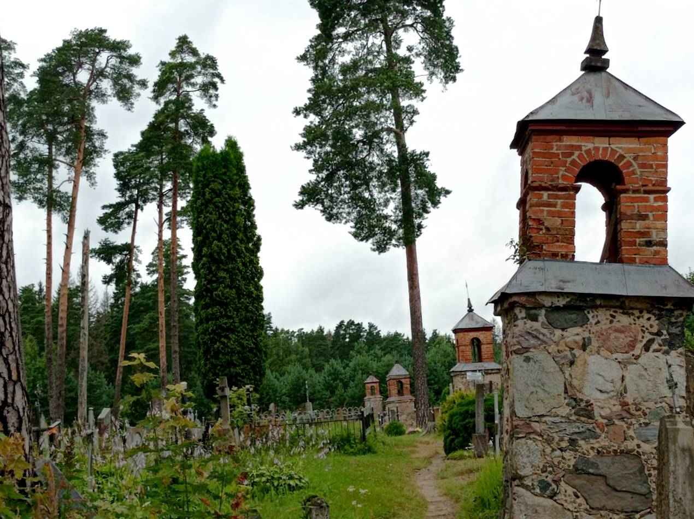
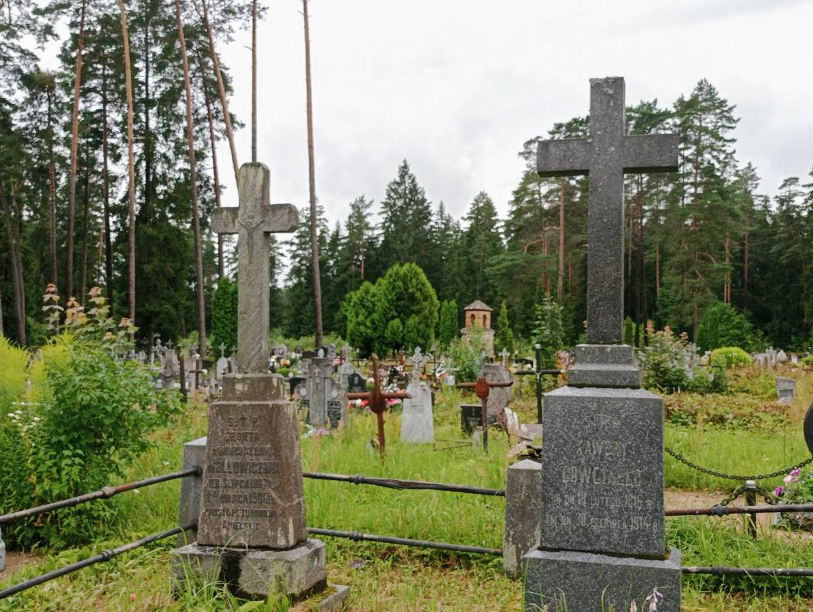

Идеальное место для любителей кладбищ, старины и историй!
На окраине Лынтуп расположено кладбище, связанное с разными знаменитыми людьми этой местности с 1700-х годов. Там и потайные ходы, могилы с польским, русским, белорусским, литовским языком на надгробьях.
 
Тут же похоронен и местный помещик Ксаверий Давгяло, который дружил с Проспером Мериме, французским писателем. Ксаверий рассказал ему местную легенду о Локисе, которая легла в основу одноименной новеллы.
Сын Ксаверия - Владислав Давгяло, начал первые археологические раскопки лынтупских курганов. Прожил Владислав недолго, и в память о своём муже, его жена подарила лынтупскому кладбищу 13 каплиц, постройка которых была с 1911-1914гг. Она была очень добрым человеком, спасшим очень много людей от расстрела во время Второй Мировой Войны.
  
Тут же можно увидеть уникальную могилу и памятник Неизвестному солдату армии Республики Средней Литвы, которая была провозглашена в этих местах и Вильне в 20-х годах прошлого века. Республика просуществовала около года, но за это время на этих землях было открыто более 100 белорусских школ. Краевед Алесь, который собирает информацию более 30 лет, рассказывает, что в детстве, прямо на этом месте, среди высокой травы, нашёл развалины старого памятника, на котором надпись была прикрыта фанерой. Любопытный Алесь посмотрел эту на польском языке. Там было сказано следующее: Неизвестному солдату, погибшему в обороне Отечества. От горожан Лынтуп.
В то время эта была тайна, никому нельзя было говорить об этом памятнике, так как коммунисты могли с лёгкостью уничтожить наследие этих земель. Все жители деревни знали об этом памятнике, но никто не говорил об этом открыто. После развала СССР, памятник был отреставрирован белорусским художником Алесем Циркуновым. Записала Анна Адотик.